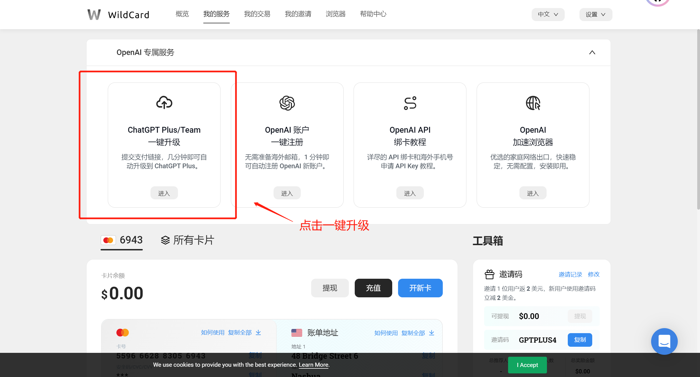
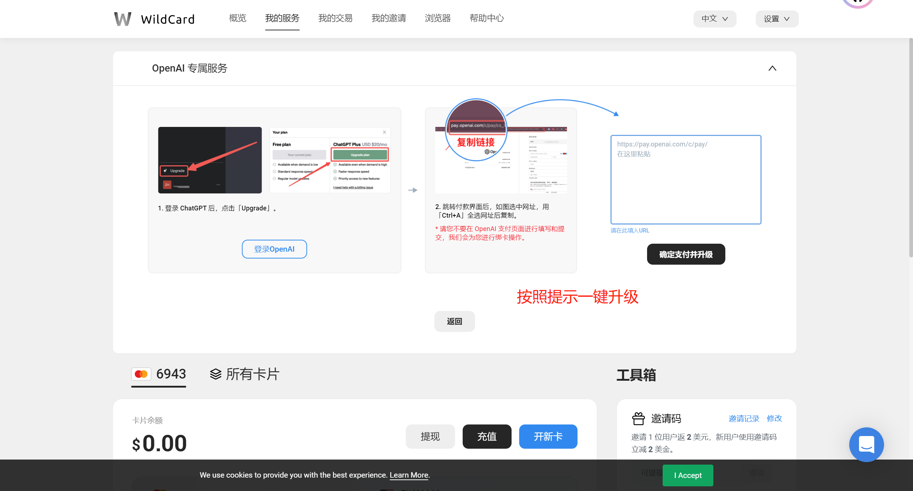

使用虚拟信用卡升级GPT-4（2024年2月可用）
GPT-4闲聊
GPT4是订阅制，20美元/月，新手朋友的话，可以先收藏文章/博客，先用一段时间ChatGPT也就是GPT3.5，如果觉得有想法可以再订阅一个月试试。我的感受是GPT4会比GPT3.5准确很多就像是从黑白电影跳跃到了彩色世界，再也没想过回头
GPT4提供比GPT3.5更快的速度、更强的性能，并且可以使用插件。然而，要向OpenAI支付来订阅GPT4，需要一张海外银行卡。许多用户表示在GPT4的付费订阅支付时遇到障碍，大多数情况下是由于OpenAI的相关政策或由于所使用的支付渠道不符合规定所导致。一种有效的解决方法是申请一张新的虚拟信用卡，从而绕开风控系统。在某些情况下，可能需要重新注册ChatGPT账号（如果虚拟卡支付仍存在问题，可以考虑重新注册GPT账号）。
注册虚拟卡
这里推荐一个用户友好、操作简便的平台，全流程仅需约2分钟：WildCard（使用这个链接可以省两美元开卡费）
推荐的原因主要是因为这是一家国内公司，通过支付宝实名认证，为的就是方便国人使用虚拟卡来进行海外业务。我开通的是有效期2年的虚拟信用卡，开卡费包含两年年费，不到100块，每天成本不到2毛钱。其他费用无，充值方面根据个人需求充就行。关键是，如果没有消费成功，可以随时提现余额到支付宝。
升级GPT-4
在WildCard首页更是可以一键升级GPT-4直接输入代付链接即可，根本不需要担心网络的问题
 